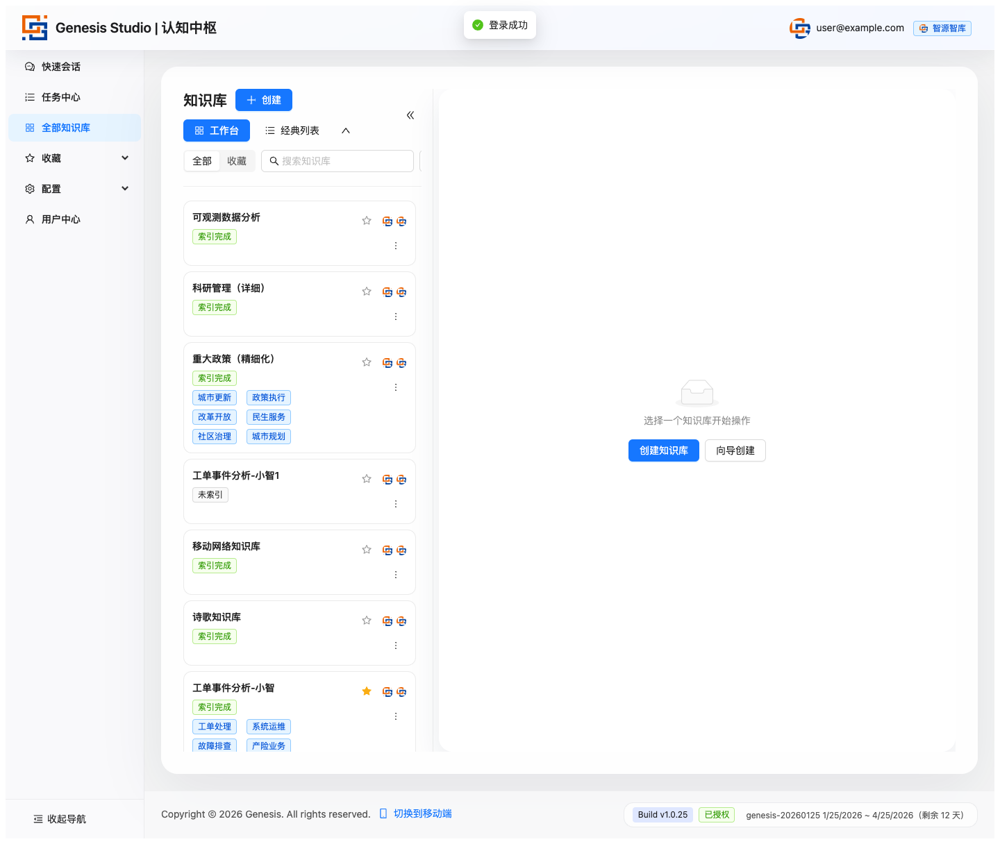
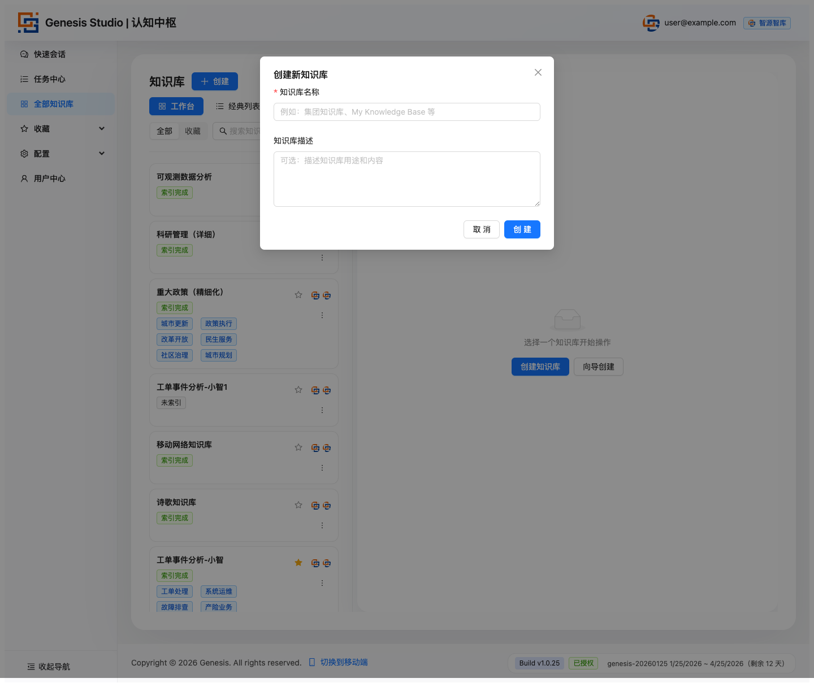
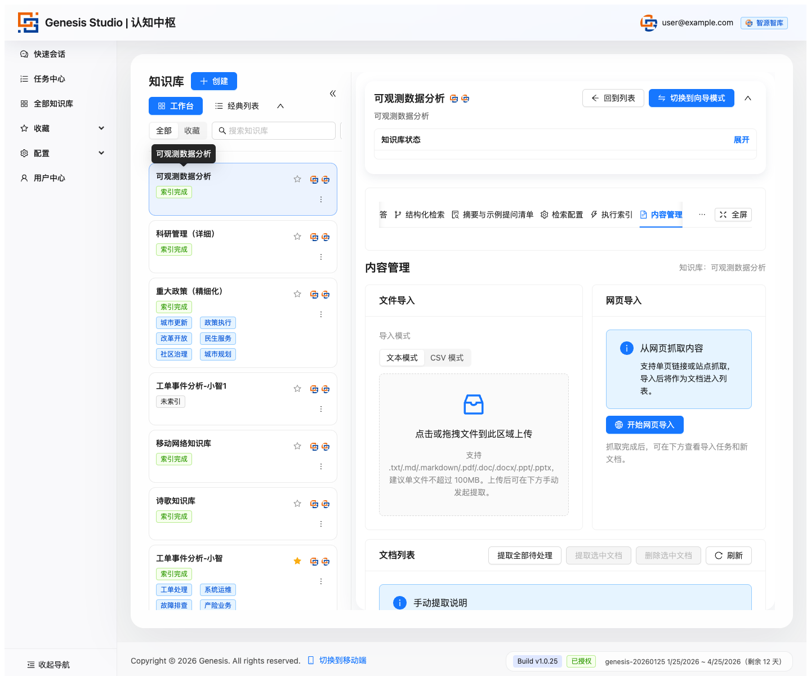
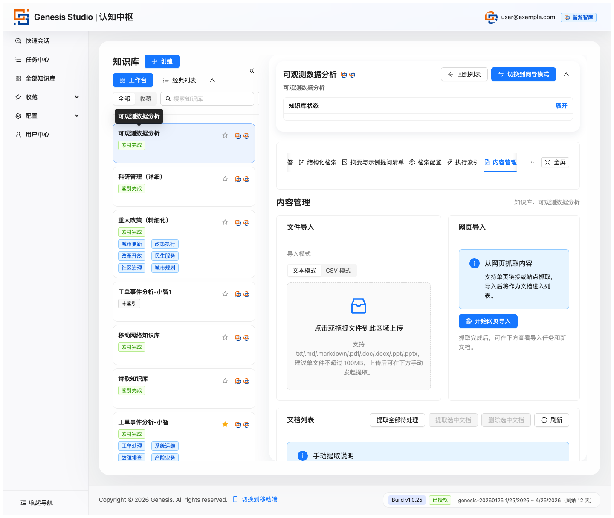
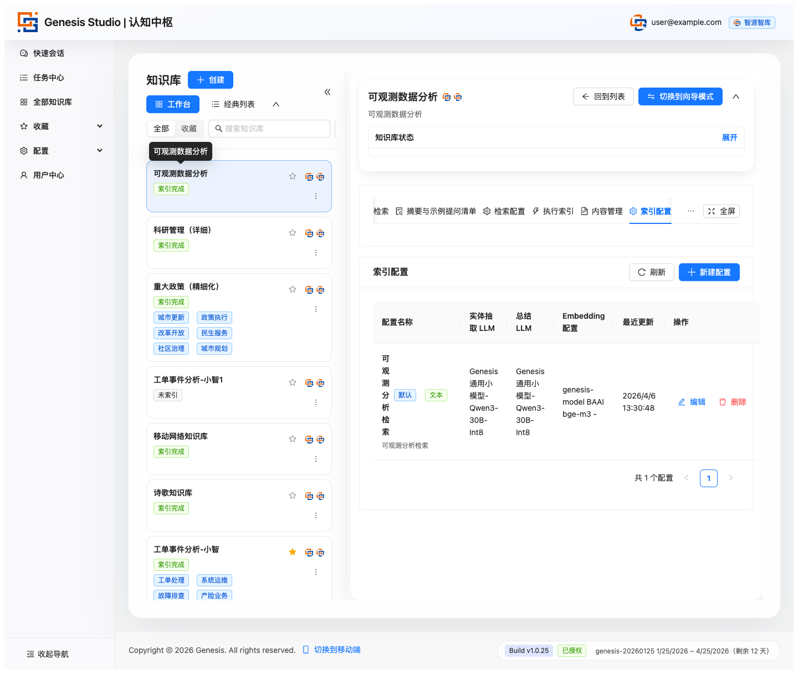
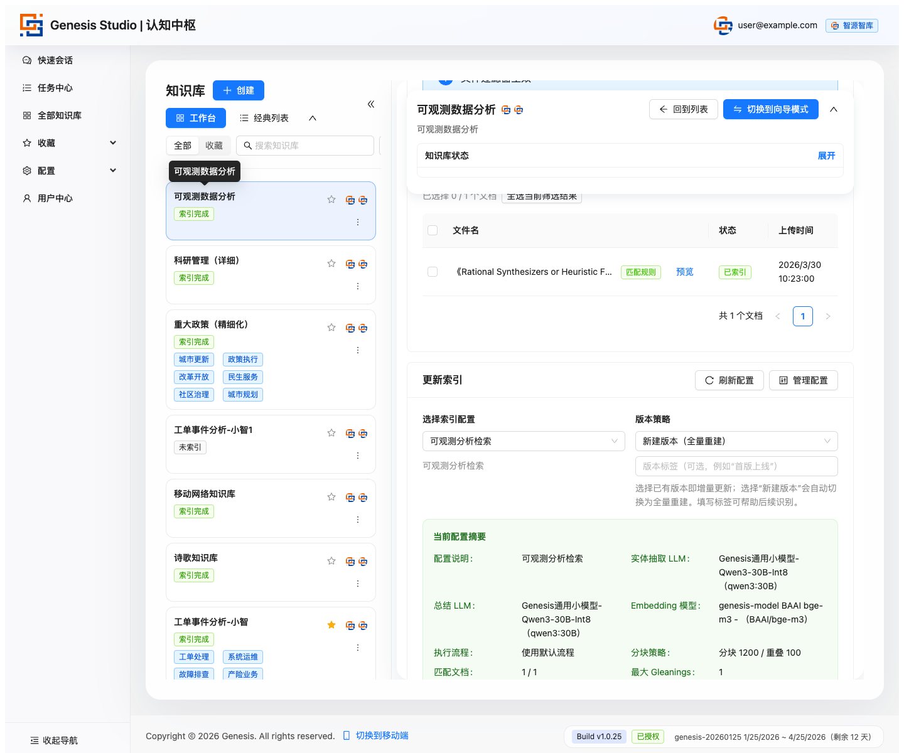
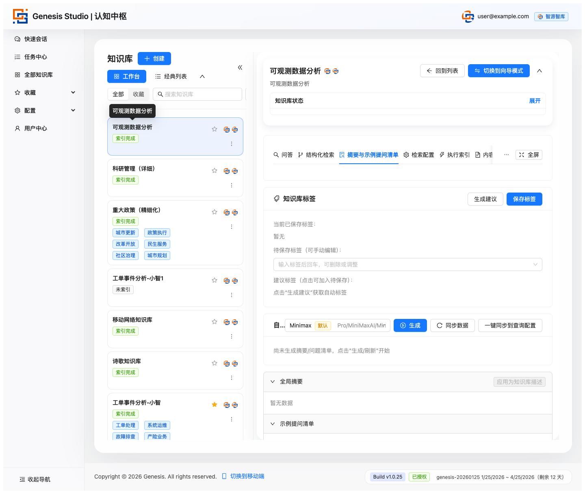

Genesis Studio 管理用户运营版
这份页面面向系统管理员、组织管理员和知识库负责人。它先讲清楚不同管理员的职责边界， 再把组织入口、用户成员、模板规则、知识库运营和持续治理串成一条可执行的管理链路。
目录
- 先分清三类管理角色
- 系统管理员：搭平台底座
- 系统管理员：管用户、授权和系统模板
- 组织管理员：管组织入口、品牌和成员
- 组织管理员：把组织成员带到业务系统
- 知识库负责人：运营知识库资产
- 从三层管理串成一条闭环
- 日常节奏和常见风险
先分清三类管理角色
管理用户不是同一种人。Genesis Studio 里至少要分清三层：系统管理员、组织管理员、知识库负责人。
系统管理员
负责整个平台能不能稳定、安全、合规地运行。
- 系统配置
- 系统授权
- 用户管理
- 组织管理
- 模型模板
- 查询和索引提示词模板
组织管理员
负责一个组织在平台里的入口、成员和品牌呈现。
- 组织配置
- 业务系统登录 URL
- 组织成员
- 组织品牌
- 主页露出
- 组织级开关
知识库负责人
负责某个知识库能不能持续产出可用答案。
- 建库
- 内容导入
- 索引配置
- 执行索引
- 问答验证
- 分享与导出

先搭平台底座
系统管理员看的不是某一个知识库，而是整个平台的底座是否可用。进入系统管理后，优先检查系统配置、系统授权、组织管理和用户管理。
系统配置
系统配置决定平台级体验和接入能力。管理员通常会在这里维护品牌与外观、自助注册、SSO 连接、SSO 准入策略、邮件与验证码、多模态抽取、AI 企哒接入和微信 SSO 接入。
系统授权
系统授权决定业务功能是否可正常使用。管理员需要查看授权状态、客户编号或合同号、有效期、设备指纹和功能开关；在未激活或即将到期时，及时上传授权文件或导出设备信息。
再管用户、组织 owner 和系统模板
系统管理员负责把“谁能进平台、谁能管组织、各组织使用什么统一模板”先准备好。
用户管理
用户管理用于维护全站用户。常见动作包括搜索用户、按状态和角色筛选、创建用户、编辑用户、激活或禁用用户、批量激活或批量禁用、重置密码、设置用户有效期、解绑外部账号。
这里的“管理员”是系统级管理员。给某个用户勾选管理员后，这个用户会获得系统管理能力，应当严格控制。
组织管理
系统管理员可以新建组织、切换查看组织、修改组织状态、设置默认组织、控制组织是否在主页露出、是否允许 AI 企哒注册新账号、是否显示退出登录按钮。
系统管理员在组织成员管理里主要管理组织拥有者，也就是把某个用户设为某个组织的 owner。组织 owner 再管理该组织内的普通成员。
系统模板
模型模板、查询提示词模板和索引提示词模板用于把最佳实践沉淀成全局可复用规则。系统管理员应先准备常用模板，让知识库负责人不用从零配置。
管组织入口、品牌和成员
组织管理员进入组织管理后，重点不是全站配置，而是把自己负责的组织维护清楚。
组织入口
组织管理页会提供业务系统登录 URL。组织管理员可以把这个 URL 发给本组织用户，让用户从正确组织入口进入平台。
如果一个用户属于多个组织，业务系统里也支持切换组织。组织管理员需要告诉用户当前应该在哪个组织下建库、上传资料和提问。
组织品牌
组织品牌配置用于维护展示名称、Logo、背景图、主色、辅色、欢迎标题、欢迎副标题、页脚文案、登录按钮文案、支持联系方式、品牌主页、浏览器图标、空状态插图、首页公告、法务链接、默认语言、默认时区和水印文案。
这些内容决定本组织用户看到的平台是否像一个正式的组织系统，而不是一个临时工具。
组织成员
组织管理员主要管理组织成员。常见动作包括按邮箱邀请已有用户加入组织、设置成员为 active 或 inactive、批量加入成员、批量更新已勾选成员状态、移除成员。
组织管理员不能把普通成员提升为组织 owner，也不能管理系统管理员；这类高权限动作由系统管理员处理。
把组织成员带到业务系统
组织管理员的目标不是只把成员加进来，而是让成员能在正确组织下使用知识库。
- 确认组织状态为 active。
- 确认组织入口和品牌信息正确。
- 复制业务系统登录 URL 给本组织用户。
- 把需要使用平台的人加入组织成员。
- 确认成员状态为 active。
- 指导成员进入“全部知识库”，开始查看或使用组织内知识库。
如果知识库设置为组织内可见，同组织用户通常可以只读访问；如果需要定向分享，则由知识库负责人在分享中心或成员页继续控制。
运营知识库资产
知识库负责人负责把一个业务主题真正运营起来。这里关注的是知识库是否能持续提供可靠答案。
知识库建设
知识库不是普通文件夹，而是业务单元。更稳妥的方式是按部门、业务线、项目或主题领域来建。
- 标准创建：适合日常新建，最稳。
- 向导创建：适合给新团队或新同事推广时使用。
- 导入创建：适合迁移、复制、交付和复用。

内容沉淀
对普通用户来说，内容管理是上传页；对管理用户来说，内容管理是知识入口控制页。
管理用户要关注的不是“上传了没有”，而是内容来源是否稳定、文档质量是否可用、状态流转是否顺畅，以及是否存在大量失败和积压。
- 文件导入：适合本地资料、正式文档、历史存量资产。
- 网页导入：适合外部资料、公开页面、链接型知识来源。


索引能力建设
索引配置是质量控制中心。它决定知识怎么切分、哪些内容被纳入处理、用什么模型处理、用什么提示词去抽取和组织知识。
管理用户应尽量让每个知识库都有清晰命名的配置，保留默认配置，并让同类知识库尽量保持规则一致。

执行索引页是生产执行页。每次执行时，要看处理的是哪些文档、使用的是哪套配置、结果形成的是哪个版本。

使用推广
摘要与示例提问页是推广起点。它可以作为知识库简介页、新用户引导页和问题示范页，帮助业务用户知道从哪里开始问。

问答页是价值兑现页。管理用户要观察业务用户是否愿意提问、回答是否能支撑业务使用、历史查询是否形成可复用经验。

从三层管理串成一条闭环
系统管理员、组织管理员和知识库负责人不是三条孤立链路，而是上下游关系。
- 系统管理员完成授权、SSO、邮件、注册策略和全局模板。
- 系统管理员创建组织，并指定组织 owner。
- 组织管理员配置组织入口、品牌和组织级开关。
- 组织管理员把成员加入组织，并把业务系统登录 URL 发给用户。
- 知识库负责人按业务主题建库，导入内容，设置索引配置。
- 知识库负责人执行索引，生成摘要和示例问题。
- 业务用户进入问答页使用，知识库负责人根据效果持续调优。
- 组织管理员和系统管理员分别从组织范围、系统范围继续治理。
日常节奏和常见风险
平台进入稳定使用后，不同管理员要看不同层面的风险。
系统管理员每天或每周看什么
- 授权是否有效，是否接近到期。
- SSO、邮件、微信 SSO、AI 企哒接入是否正常。
- 是否有用户异常停用、过期或无法登录。
- 系统模板是否需要统一更新。
组织管理员每天或每周看什么
- 组织成员是否正确，离职或外部人员是否已停用。
- 组织品牌、公告、法务链接和支持联系方式是否过期。
- 组织内是否有新用户不知道从哪个入口登录。
- 组织内知识库是否需要统一推广或收敛。
知识库负责人每天或每周看什么
- 内容是否持续更新，失败文档是否积压。
- 索引任务是否成功，版本是否清楚。
- 摘要和示例问题是否能引导新用户。
- 问答效果是否稳定，是否需要补内容或调配置。
- 提示词治理：统一回答风格，稳定不同知识库的表现。
- 分享治理：控制谁可以看、谁可以共享使用。
管理用户最容易踩的坑
- 把系统管理员、组织管理员和知识库负责人混成一个角色，导致权限过大或责任不清。
- 系统管理员只建用户，不指定组织 owner，导致组织无人维护。
- 组织管理员只加成员，不维护组织入口和品牌，导致用户进错组织或不信任入口。
- 把知识库当普通文件夹，导致业务结构混乱。
- 只关注上传，不关注文档状态，导致可用内容不足。
- 不做默认配置和系统模板，导致团队执行规则不统一。
- 跑完索引不看版本，导致结果变化无法追踪。
- 只重建设，不重推广，导致业务同事不会用。
对管理用户来说，Genesis Studio 的核心不是把一个页面用好，而是让系统、组织和知识库三层管理连续运转。